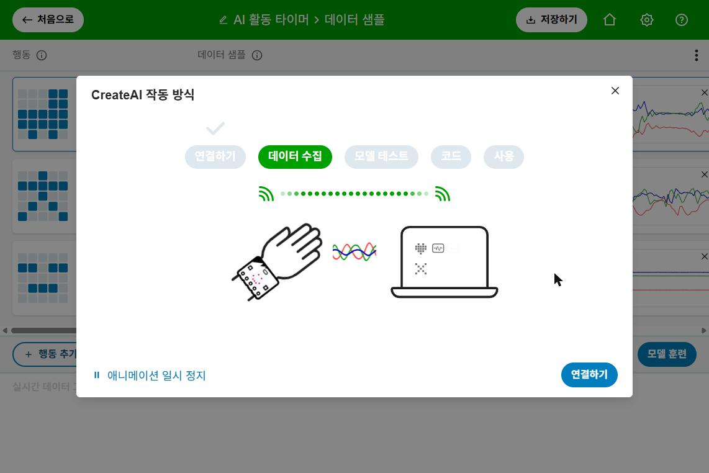
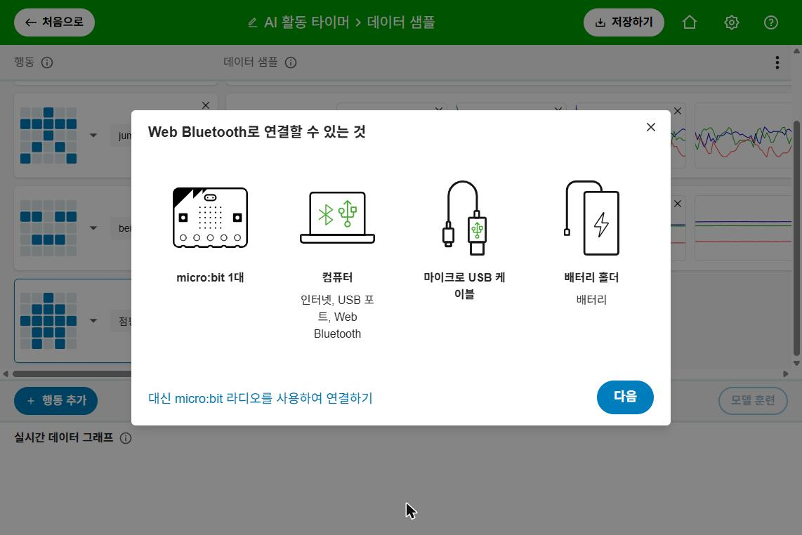
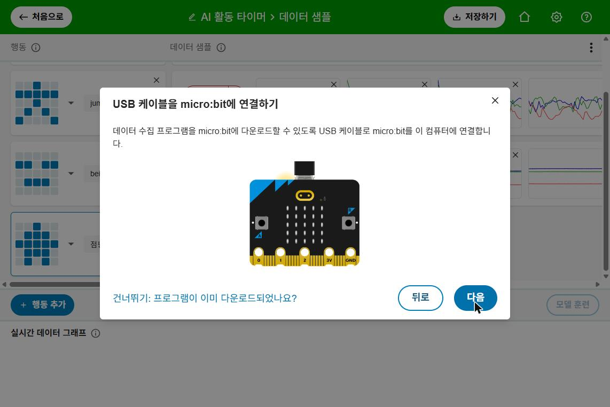
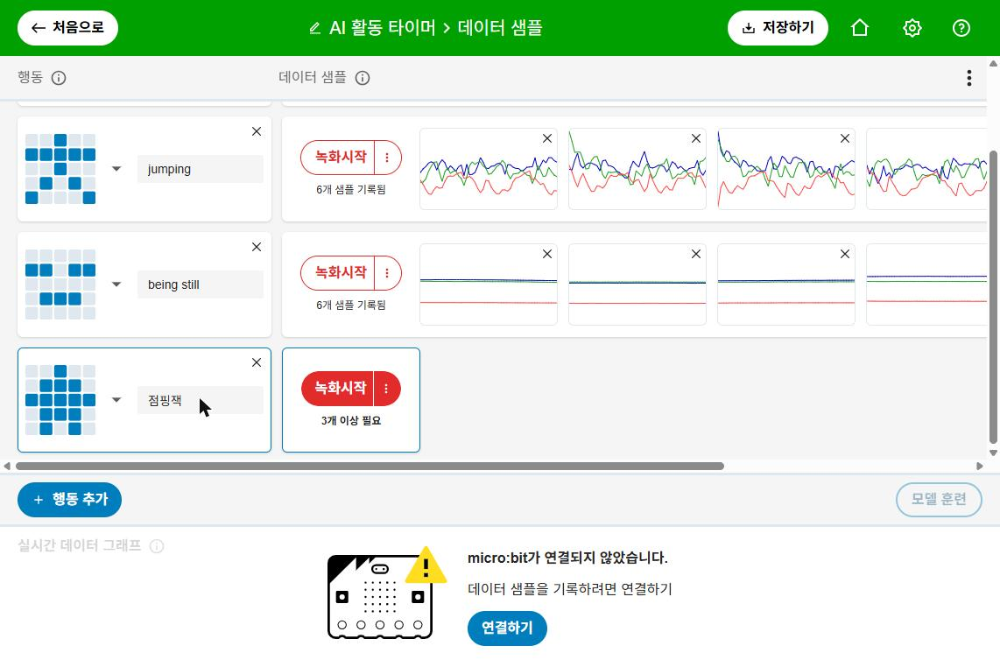
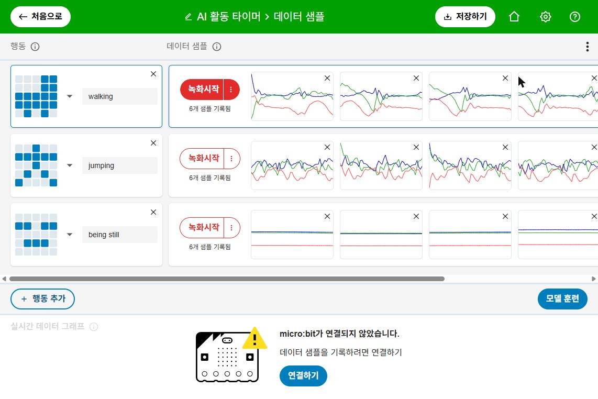
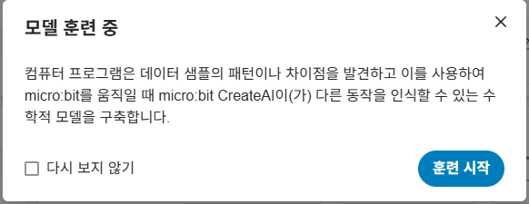
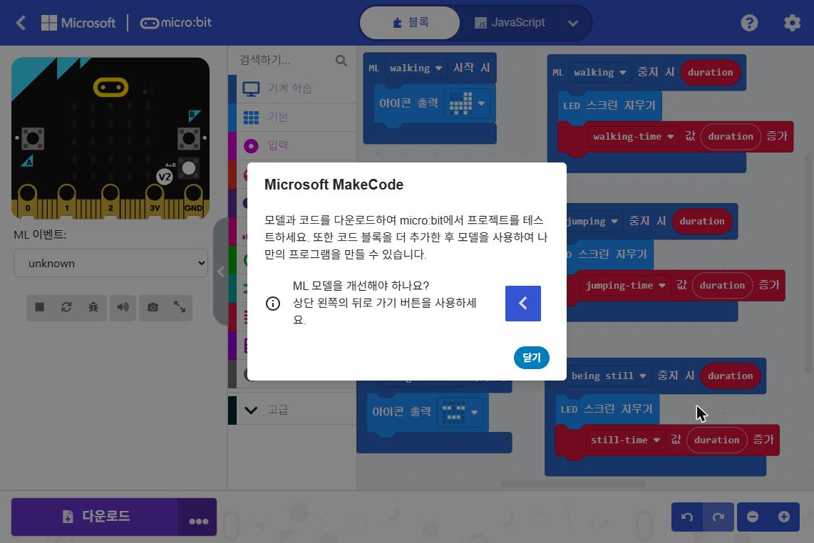
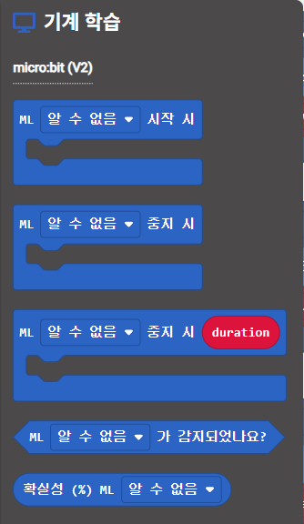
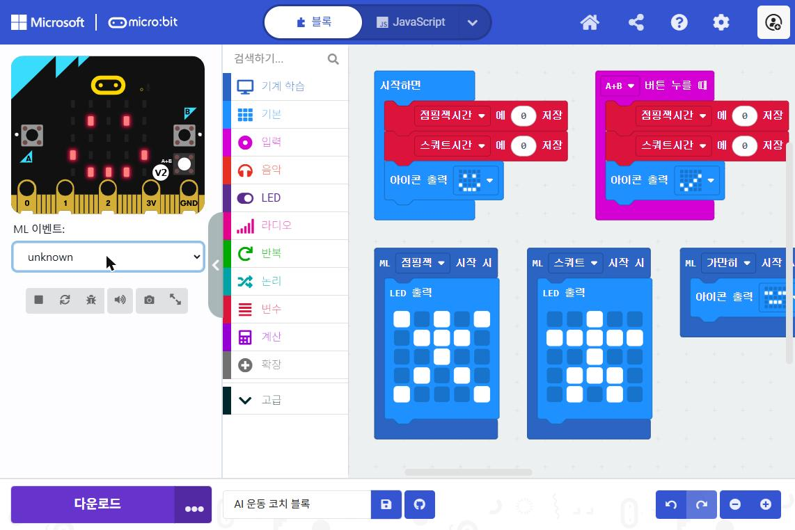

2026학년도 결빛 네트워크 연계 구산 「CODE_Boost」 주말 코딩 캠프
마이크로비트 AI가 내 운동을 알아보고
운동한 시간을 재 줘요
강사 · 부내초 교사 유경윤
1데이터 모으기
동작을 하면서
예시를 기록해요
micro:bit CreateAI
2AI 학습·테스트
AI가 예시에서
규칙을 찾아요
micro:bit CreateAI
3블록 코딩
AI가 알아본 동작으로
프로그램을 만들어요
Microsoft MakeCode
완성하면? 손목의 micro:bit가 점핑잭·스쿼트·가만히를 알아보고, 운동한 시간을 재 줘요!
지난 시간 떠올리기 · 운동보조기구
“온몸을 흔들어 주세요!” 기억나나요?
생각해 보기
점핑잭과 스쿼트를 구분할 수 있을까요?
점핑잭
micro:bit가 흔들려요
→ 횟수 +1
스쿼트
micro:bit가 흔들려요
→ 횟수 +1
흔들림 감지 블록은 “흔들렸다 / 안 흔들렸다”만 알아요.
어떤 운동을 했는지는 알 수 없어요!
그렇다면 “점핑잭이면 이렇게, 스쿼트면 저렇게”라는 규칙을 사람이 직접 만들 수 있을까요?
지난 시간 · 규칙 프로그래밍
사람이 규칙을 직접 만들어요
“만약 흔들리면 → 횟수 +1”
오늘 · 머신러닝(기계 학습)
예시를 많이 보여 주면
컴퓨터가 규칙을 스스로 찾아요
“이런 움직임은 점핑잭이야” × 여러 번
머신러닝은 컴퓨터가 데이터를 보고 배워서 판단하는 인공지능(AI)이에요.
스마트워치
걷기·달리기·수영을
스스로 알아보고 기록해요
음성 비서
내 목소리를 듣고
무슨 말인지 알아들어요
모두 아주 많은 예시(데이터)를 보고 배웠어요. 오늘 우리 micro:bit는 스마트워치처럼 운동을 알아볼 거예요!
모둠 활동 · 컴퓨터 없이
몸으로 하는 동작 맞히기 게임
1예시 보여 주기
술래 앞에서 친구가
동작 3가지를 이름과
함께 3번씩 보여 줘요
2맞히기
이름 없이 동작만
보여 주면 술래가
무슨 동작인지 맞혀요
3헷갈리게 하기
동작을 아주 작게,
또는 비슷하게 하면?
처음 보는 동작이면?
술래가 한 일 = 예시 보기 → 규칙 찾기 → 맞히기. AI도 똑같은 순서로 배워요!
1어떤 운동인지 알아봐요
동작마다 다른 LED 그림이 나와요
2운동한 시간을 재요
A 버튼은 점핑잭, B 버튼은 스쿼트 시간
3목표를 채우면 축하해요
점핑잭 30초를 채우면 하트와 소리!
SDGs 3 · 건강과 웰빙
micro:bit V2
AI 모델을 micro:bit에서
돌리려면 꼭 V2!
앞면에 금색 터치 로고와
마이크 LED가 있으면 V2
배터리 · 밴드
AAA 건전지 2개와
배터리 팩
손목에 고정할 밴드
(고무줄, 벨크로도 OK)
컴퓨터
USB 데이터 케이블
Chrome 또는 Edge
인터넷이 연결된
노트북·데스크톱·크롬북
블루투스가 없다면
micro:bit V2를
1대 더 준비해요
USB로 꽂은 micro:bit가
라디오로 데이터를 받아요
V1으로도 데이터 모으기와 학습은 할 수 있지만, 완성한 AI를 micro:bit에 넣을 수는 없어요.
micro:bit CreateAI
AI를 만드는 5단계

createai.microbit.org
무료 · 화면이 한국어로 나와요
1단계 · 동작 정하기
AI에게 가르칠 동작 3가지
왜 “가만히”도 가르칠까요? 운동을 안 할 때도 알아야 운동한 시간을 정확히 잴 수 있어요!
1단계 · 착용하기
늘 같은 자리, 같은 방향으로!
① 같은 자리
모든 데이터를 같은 손목에
차고 모아요
한 번은 손목, 한 번은 손에 쥐면
AI가 헷갈려요
② 같은 방향
LED 화면과 USB 꽂는 곳의
방향을 정해 두고 지켜요
방향이 바뀌면 숫자(데이터)가
완전히 달라져요
우리 반 약속 정하기
________ 손목에, LED 화면이 ________을(를) 보게 차요
차는 방법을 바꾸고 싶다면? 지금까지 모은 데이터를 모두 다시 모아야 해요.
2단계 · 연결하기
새 프로젝트를 만들고 micro:bit를 연결해요
1Chrome에서 createai.microbit.org
2[새 프로젝트] → 이름 “AI 운동 코치”
블루투스가 없으면 아래쪽
“대신 micro:bit 라디오를 사용하여 연결하기”

2단계 · 연결하기
데이터 수집 프로그램을 넣어요

USB 케이블로 micro:bit와
컴퓨터를 연결해요
[다음]을 누르면 micro:bit에
데이터 수집 프로그램이 들어가요
그다음 배터리 팩을 끼우고
안내대로 무선 연결을 마쳐요
프로그램이 이미 들어 있다면 [건너뛰기]

“3개 이상 필요”
동작마다 예시가 3개 이상 있어야 해요
2단계 · 데이터 모으기
녹화시작을 누르고 동작해요
모둠 역할
운동 선수 micro:bit를 차고 동작
기록 담당 동작 고르고 녹화
관찰 담당 동작이 맞는지 확인
동작마다 역할을 바꿔요
목표: 동작마다 샘플 10개 이상! 많을수록 AI가 더 잘 배워요.

화면 예시: 공식 예제 ‘AI 활동 타이머’의 데이터(걷기 · 점프 · 가만히)
빨강·초록·파랑 선 = micro:bit가 느낀 세 방향(x, y, z)의 움직임
같은 동작끼리는 비슷하고,
다른 동작과는 달라 보이나요?
좋은 데이터
✔ 같은 동작끼리 모양이 비슷해요
✔ 동작마다 모양이 확실히 달라요
✔ 여러 친구의 데이터가 섞여 있어요
✔ 가만히에도 작은 움직임이 있어요
나쁜 데이터
✘ 녹화 중에 동작을 멈추거나 바꿨어요
✘ 차는 방향이 중간에 바뀌었어요
✘ 동작마다 샘플이 너무 적어요
✘ 혼자 튀는 이상한 그래프가 있어요
이상한 샘플은 오른쪽 위 ×를 눌러 지워요. 데이터를 다듬는 것도 AI 만들기의 중요한 일이에요!

CreateAI의 실제 안내 화면
몸으로 퀴즈에서 술래가 동작을 보고 규칙을 찾은 것과 같아요!
퀴즈 · 인식 포인트 80%
AI는 무엇이라고 판단할까요?
빨간 선(인식 포인트)을 넘은 막대가 있나요? 문제 2는 왜 헷갈렸을까요?
| 시험한 사람 | 점핑잭 | 스쿼트 | 가만히 |
|---|
| ① 데이터를 모은 나 | ○ △ × | ○ △ × | ○ △ × |
| ② 우리 모둠 친구 | ○ △ × | ○ △ × | ○ △ × |
| ③ 다른 모둠 친구 | ○ △ × | ○ △ × | ○ △ × |
모델 고치기
모으고, 훈련하고, 시험하고, 다시!
1데이터 고치기
더 모으고, 이상한 것은 지워요
점핑잭을 하면 점핑잭 막대가 인식 포인트를 넘어요
스쿼트를 하면 스쿼트, 가만히 있으면 가만히예요
모두 체크했다면 MakeCode로 출발! 아직이라면 앞 장으로 돌아가 한 번 더 고쳐요.
4단계 · 블록 코딩
[MakeCode에서 편집하기]

1테스트 화면 오른쪽 아래
[MakeCode에서 편집하기]

ML ○○ 시작 시
AI가 그 동작을 시작했다고 판단하면 실행
ML ○○ 중지 시
AI가 그 동작이 끝났다고 판단하면 실행
중지 시 duration
방금 끝난 동작을 몇 ms 했는지 알려 줘요
감지되었나요? · 확실성(%)
지금 그 동작인지, 얼마나 확신하는지
코딩 1단계 · 동작 알아보기
동작마다 다른 LED 그림을 보여 줘요
코딩 1단계 · 실행해서 확인
시뮬레이터로 먼저 시험해요

시뮬레이터 아래
ML 이벤트 상자에서
동작을 골라요
잘 되면 [다운로드]!
AI 모델과 코드가 함께 micro:bit로 들어가요
코딩 2단계 · 운동 시간 재기
duration은 밀리초(ms)예요
5000 ms → 5초
12345 ms → 약 ?초
코딩 2단계 · 운동 시간 재기 ①
동작이 끝나면 시간을 더해요
duration 동그라미를 끌어서
‘값 증가’ 칸에 넣어요
코딩 2단계 · 운동 시간 재기 ②
버튼으로 운동 시간을 확인해요
코딩 2단계 · 실행해서 확인
30초 동안 점핑잭! 몇 초가 나올까요?
| 도전 | 실제 시간 | micro:bit |
|---|
| 1회 | 30초 | ____초 |
| 2회 | 30초 | ____초 |
| 3회 | 30초 | ____초 |
왜 3번에서 “가만히”를 해야 할까요? 힌트: 시간은 동작이 끝날 때 더해져요!
코딩 3단계 · 코치 기능
30초를 채우면 축하해요
앞에서 만든 점핑잭 중지 시 블록에 이어서 넣어요
블록 9개 · 동작 알아보기 3 + 시간 재기 2 + 버튼 3 + 시작하면 1
동작을 잘 못 맞혀요
데이터 더 모으기,
차는 방향 확인하기
시간이 0이에요
운동 뒤 가만히 했나요?
중지 시 블록 확인
다운로드가 안 돼요
micro:bit가 V2인가요?
데이터용 USB 케이블?
ML 블록이 없어요
CreateAI의 [MakeCode에서
편집하기]로 열었나요?
소리가 안 나요
V2 스피커 확인,
목표 시간을 채웠나요?
1규칙
1분 동안 점핑잭과 스쿼트를
마음대로 섞어서 해요
2기록
A·B 버튼으로 시간을 확인하고
더한 값이 우리 모둠 점수
AI 심판은 공정할까요? 어떤 친구에게 더 유리하거나 불리하지는 않을까요?
AI와 공정성
내 데이터로만 배운 AI는 누구에게 잘 맞을까요?
다양한 사람의 데이터를 모아요
모두 할 수 있는 동작도 넣어요
새 운동 추가
제자리 달리기를 가르치고
터치 로고로 시간 확인
소리 코치
동작이 바뀔 때마다
다른 소리로 알려 주기
AI 속이기 실험
헷갈리는 데이터를 넣으면
AI가 어떻게 될까?
AI를 속일 수 있는 방법을 찾으면, AI를 더 튼튼하게 만드는 방법도 보여요!
SDGs와 연결하기
AI 운동 코치를 어디에 쓸 수 있을까요?
💡 우리 모둠 아이디어: ____________________
오늘 배운 것
AI는 예시로 배우고,
코드는 AI를 쓸모 있게
만들어요
① 데이터 모으기
② 학습·테스트
③ 블록 코딩